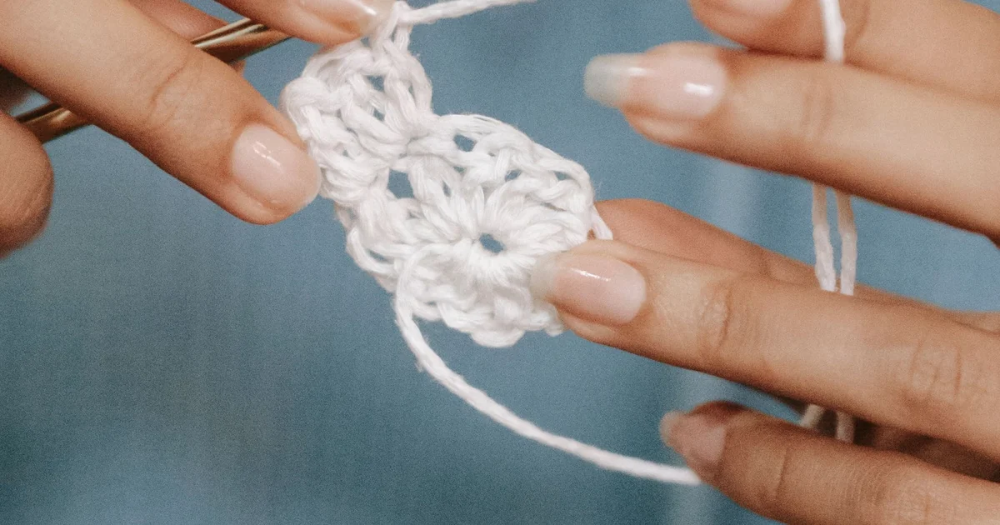
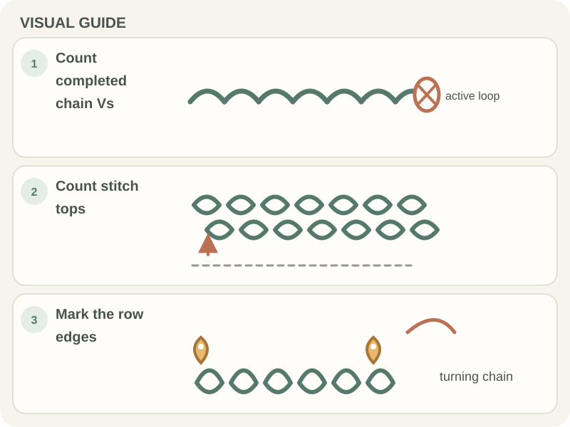

Crochet Basics · Beginner guide
How to Count Crochet Chains and Stitches
Count chain links and completed stitch tops without counting the active loop or a turning chain incorrectly.

A reliable count starts by identifying what the pattern means by “stitch.” Completed row stitches are counted across the row; chain spaces and turning chains depend on the instructions.
Before you begin
Lay the work flat in good light. If the edge loops are difficult to distinguish, place a removable marker in the first or last stitch.
Step-by-step instructions
- For a foundation chain, find the repeated V-shaped links. Do not count the loop currently on the hook.
- For a worked row, follow the top Vs one at a time from edge to edge.
- Check the pattern’s note about the turning chain; some patterns count it and others do not.
- Compare your total with the stated row count and inspect whether a chain space is being mistaken for a stitch.

What to check
Count the structure the pattern names
An off-by-one count often comes from the turning chain or an edge stitch. Count again from the opposite edge and compare your result with the pattern’s rule.
Frequently asked questions
Do I count the loop on my hook?
No. It is the active loop, not a completed chain or stitch.
Do I count a turning chain?
Follow the pattern’s stitch notes. The rule varies by stitch and pattern.
Count foundation chains and completed stitches
For counting chains and stitches, use this as the starting rule: separate foundation links, completed stitch tops, chain spaces, and the active loop. The stitch sequence and the pattern’s edge rules determine where the hook goes and what counts. Read the relevant instructions before beginning and keep them nearby as you work. If a general tutorial and the pattern give different directions, follow the pattern’s stated convention; another project may use a different method.
Check the turning-chain rule before counting
Before proceeding, confirm the exact turning-chain rule in the pattern. Write any project-specific choice in your notes so you can apply it consistently. If the pattern or label leaves the detail unclear, look for its own key or maker guidance rather than assuming that another project follows the same convention. This short check can prevent a small misunderstanding from affecting the rest of the work.
Use markers to keep your place
A practical way to apply counting chains and stitches: Work a short swatch and mark every fifth or tenth stitch, then recount from the other edge. After a few stitches, pause and look at the loops before repeating the movement. Good light and smooth yarn can make the structure easier to see while you learn. If the sample does not match the pattern’s directions, undo the short section and repeat the step slowly; changing one movement at a time makes the cause easier to spot.
Separate stitches from chain spaces
A common mistake in counting chains and stitches is mistaking a post, space, or edge loop for a completed stitch. Watch for this sign: row totals differ even though the fabric looks plausible. That can change the stitch count or leave a loop difficult to work into. Compare the recent work with the pattern and locate the first point where they differ. Correct that detail before continuing; stretching the fabric or adding an unplanned step can hide the cause without fixing it.
Find where a count first changes
If row totals differ even though the fabric looks plausible, first check the exact turning-chain rule in the pattern. Then compare the stitch sequence, insertion point, and edge count at the last correct row with what you actually have. Change one thing at a time so you can tell whether it addresses the problem. If the instructions and materials match but the result still differs, use the project’s gauge, sizing, substitution, or care notes as relevant; those are more useful than a universal fix.
Keep row totals aligned with the pattern
Remember: correct counts keep shaping and repeats aligned. Following the same insertion and pull-through sequence helps keep the stitch structure recognizable from one row to the next. If you choose an alternative, record it and compare a small sample or written step before applying the change across the project.
A practical way to recount a row
To make counting chains and stitches easier to repeat, use this sequence: mark every fifth or tenth stitch, then recount from the other edge, inspect the result, and only then continue. At first, slow down at the point where the pattern changes direction, begins a new round, or starts a repeat. A removable marker or brief row note can hold your place while you learn the construction. Once the sequence is clear, you can work more steadily without guessing which loop or instruction comes next.
Conclusion: Counting chains and stitches
Keep this lesson in mind: correct counts keep shaping and repeats aligned. Carry the pattern’s stitch and edge rule into the next row. A chain space is not automatically a stitch: count what the pattern names, and use the turning-chain note to settle an edge count.